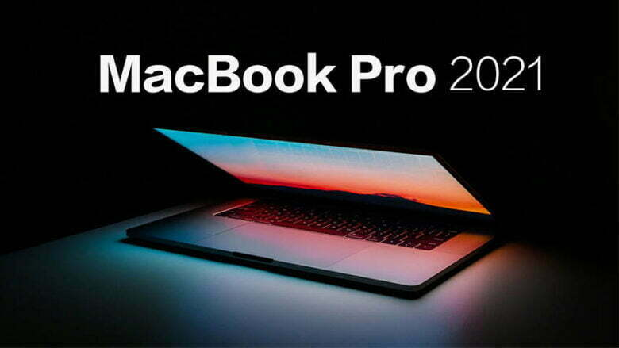

DigiNews
DigiNews
تمامی حقوق این سایت برای دیجی نیوز محفوظ است. نقل مطالب با ذکر منبع بلامانع است.
copy Right© 2022 DigiNews News Agancy, All rights reserved

بررسی مک بوک پرو ۲۰۲۱ از نگاه سایتهای معتبر حوزه فناوری
تا پیش از این اگر به دنبال خرید مک بوک با نمایشگر بزرگ برای تدوین ویدیو بودید، تنها میتوانستید مک بوک پرو با سختافزار قدیمی اینتل و AMD را انتخاب کنید. حالا جدیدترین مدلهای مک ...
تا پیش از این اگر به دنبال خرید مک بوک با نمایشگر بزرگ برای تدوین ویدیو بودید، تنها میتوانستید مک بوک پرو با سختافزار قدیمی اینتل و AMD را انتخاب کنید. حالا جدیدترین مدلهای مک بوک پرو از راه رسیدهاند تا نقش قویترین لپتاپهای اپل را به عهده بگیرند. در این مطلب قصد داریم از مزایا و معایب مک بوک پرو ۲۰۲۱ از دید سایتهای معتبر حوزه فناوری بگوییم.
مک بوک پرو ۲۰۲۱ در مقایسه با نسل قبل پیشرفتهای قابل توجهی را تجربه کرده و حالا از نظر پورتها بسیار کاملتر شده و از نمایشگر Liquid Retina XDR، با حاشیههای کمتر، ناچ در بالا، نرخ رفرش ۱۲۰ هرتز و پشتیبانی از HDR بهره میبرد. پورت شارژ مگسیف به مک بوک پرو ۲۰۲۱ بازگشته که این موضوع به تنهایی میتواند برای برخی از کاربران یک نکته مثبت و برای برخی دیگر یک نکته منفی تلقی شود. تاچبار از مک بوک پرو ۲۰۲۱ حذف شده و این لپتاپ همچنین در خروجی ۳.۵ میلیمتری، از هدفونهای حرفهای با امپدانس بالا پشتیبانی میکند. از نظر شارژدهی هم شاهد اعداد ۱۷ و ۲۱ ساعت برای دو مدل ۱۴ و ۱۶ اینچی هستیم که اعداد بسیار بالایی به حساب میآیند. در ادامه نگاهی خواهیم داشت به بررسی مک بوک پرو ۲۰۲۱ توسط وبسایتهای معتبر.
طراحی در مک بوک پرو ۲۰۲۱ دیگر اولویت اول نیست
با دیدن این تیتر شاید تصور کنید که در اولویت نبودن طراحی یک نکته منفی باشد اما برای مک بوک پرو ۲۰۲۱ این طور نیست. به گفته وبسایت ورج، اپل در گذشته برای مدتهای طولانی تلاشهای زیادی برای کاهش ضخامت انجام داده بود و این موضوع موجب شده بود برخی از ویژگیهای دستگاه فدا شود. به همین دلیل افزایش ضخامت یک اصلاح مهم تلقی میشود. همین افزایش ضخامت، موجب شده شاهد پورتهای فول سایز با تعداد بیشتر و سیستم کولینگ کارآمدتر در این لپتاپ باشیم. وبسایت سینت نیز بازگشت پورتهای متعدد به مک بوک پرو ۲۰۲۱ را یک موضوع مهم و مثبت میداند.
نمایشگر با کیفیت و صدای عالی
نمایشگر از بخشهای دیگری است که بهبودهای مهمی شامل حالش شده. یکی از این موارد پشتیبانی از نرخ رفرش ۱۲۰ هرتزی است که بسته به شرایط و در نرمافزارهای مختلف، به طور خودکار تنظیم میشود. البته وبسایتهای مختلف درباره این ویژگی نظرات متفاوتی دارند. وبسایت انگجت معتقد است که نرخ رفرش بالاتر نمایشگر، محسوس است و پس از چند ساعت استفاده، موجب احساس خستگی کمتر چشم نسبت به نمایشگرهای دیگر میشود.
اما از نظر ورج، تفاوت روان بودن نمایشگر ۱۲۰ هرتزی با حالت معمول، در استفادههای غیر گیمینگ بسیار کم است و تشخیص آن چندان ساده نیست. شاید نظر ورج در این باره صحیحتر باشد؛ چون اخیرا مشخص شده است که بسیاری از برنامههای بومی مک از جمله مرورگر سافاری از نرخ رفرش بالا پشتیبانی نمیکنند و حتی برخی از توسعهدهندگان هنوز نمیدانند که چگونه باید اپلیکیشنهای خود را برای این نرخ رفرش سازگار نمایند.
از نظر هر سه وبسایت انگجت، ورج و سینت، موضوع ناچ چندان آزار دهنده و مهم نیست؛ چون معمولا در منوی بالایی مخفی میشود یا در بسیاری از اپلیکیشنها از جمله حین تماشای ویدیو به خوبی با رنگ مشکی لبه بالایی نمایشگر، پنهان میشود.
این سه وبسایت همچنین اعتقاد دارند که کیفیت نمایشگر در مجموع بسیار بالا است. سینت، تصاویر نمایشگر مک بوک پرو ۲۰۲۱ را بسیار شبیه به نمایشگرهای امولد میداند. ورج اما کمی دقیقتر به بررسی نمایشگر پرداخته. به گفته این وبسایت، رنگ مشکی بسیار عمیق است اما این نمایشگر هم مشابه نمایشگر mini LED در آیپد پرو، محدودیتهایی دارد. در نمایشگر مک بوک پرو ۲۰۲۱ گاه زمانی که یک تصویر متحرک سفید را در پس زمینه تیره مشاهده میکنید، هالهای از نور در مسیر حرکت و در اطراف رنگ سفید به چشم میخورد. البته این موضوع در نمایش زیرنویسها چندان به چشم نمیآید. ورج در نهایت اشاره میکند که با وجود این نقص، اما نمایشگر برای استفاده روزانه عالی است و حتی از نمایشگر پرو دیسپلی XDR اپل کیفیت بالاتری دارد و بسیاری مشکلات پرو دیسپلی XDR، در مک بوک پرو ۲۰۲۱ دیده نمیشود.
در مجموع به عقیده ورج این نمایشگر، دقیق و تماشای آن لذتبخش است و به لطف تکنولوژی mini LED که امکان تنظیم روشنایی نمایشگر در بخشهای مختلف پنل به طور جداگانه را فراهم میکند، عملکردی به مراتب بهتر از نمایشگرهای HDR در کامپیوترهای ویندوزی دارد.
DigiNews
DigiNews
تمامی حقوق این سایت برای دیجی نیوز محفوظ است. نقل مطالب با ذکر منبع بلامانع است.
copy Right© 2022 DigiNews News Agancy, All rights reserved